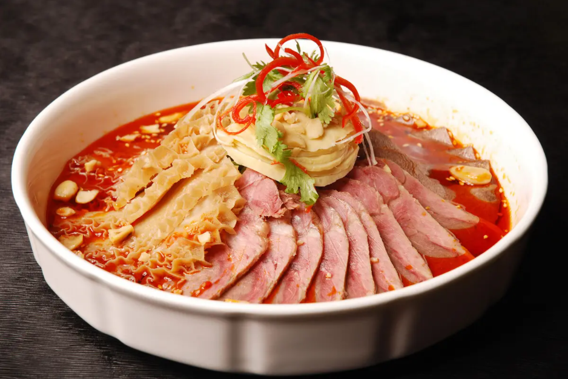
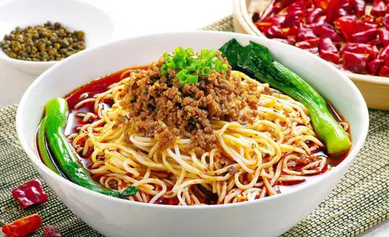
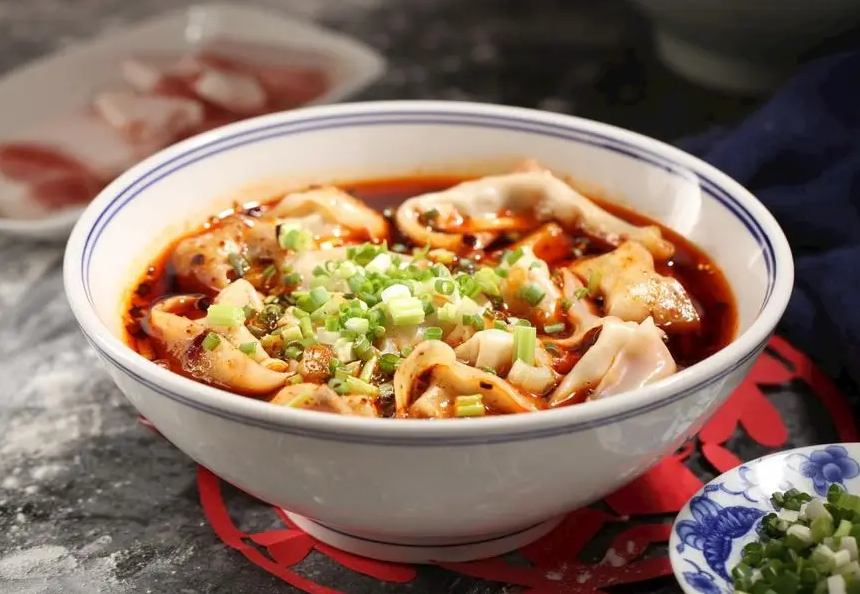
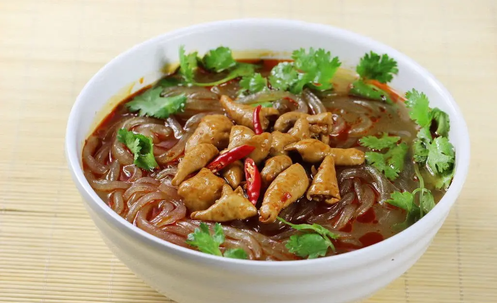
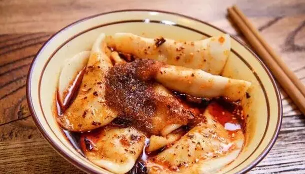
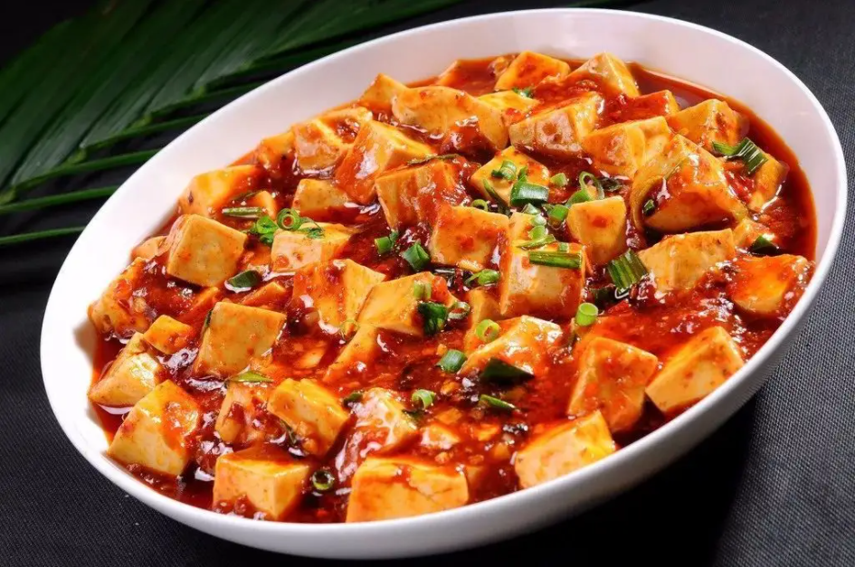
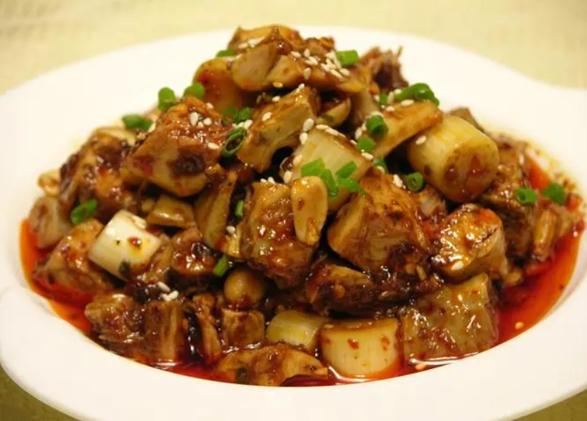
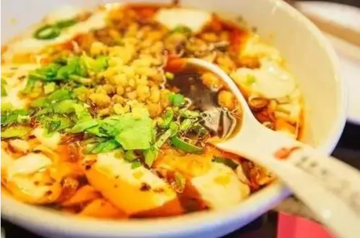
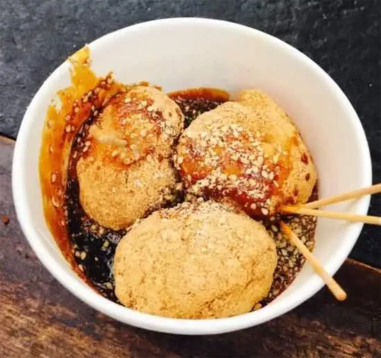

一首赵雷的《成都》，让大家熟知了承载三千余年的历史的成都，成都也是首批国家历史文化名城”和“中国最佳旅游城市。那来成都旅游，一定要吃的十大美食有哪些呢，哪些美食是成都前十名呢，让我们一起来看看吧。
一、成都十大美食-夫妻肺片
夫妻肺片最早是由一对姓郭的夫妻发明，这对姓郭的夫妻采用上好的牛舌、牛心、牛筋、牛头皮，进行调味，他们制作的肺片味道独特，吃起来非常爽口、下饭！在成都，只要有客人，大部分的家庭都会去买肺片招待，这也是成都餐桌上的“常客”。

二、成都十大美食-担担面
担担面作为成都人早上必吃的美食之一，最早开始流行驶一个自贡小伙挑着担子沿街叫卖。小伙儿将煮面的锅中间隔开，就跟我们今天看你到的鸳鸯锅一样，一边炖鸡炖猪蹄，一边煮面，煮好面之后，用鲜美的汤汁浇上去，配上佐料，味道极美。如果你来到成都，早上来一碗担担面，那生活简直赛神仙！

三、成都十大美食-龙抄手
龙抄手其实就是北方人经常说的馄饨，在成都大家都叫抄手。龙抄手的食材都是采用鸡肉和猪肉身上特定的部分制作而成，肉质爽滑细嫩，皮薄肉嫩的龙抄手非常受到大家的喜爱，不管是当地人还是游客，对龙抄手都是100%的好评。

四、成都十大美食-串串香
串串香是成都驰名中外的一道美食，更是成都街边小巷、街头巷尾、夜市餐桌的一道必备菜品。串串香是把菜和肉切下，用竹签串起来，顾客选择要吃的菜，然后用特制的汤料烫好。串串香的味道普遍偏辣，不会吃辣的小伙伴可要小心啦！
五、成都十大美食-肥肠粉
肥肠粉中的“粉”可能跟很多北方地区用的材料不同，成都的“粉”是采用的是马铃薯、红薯作为原料，经过十多道工序，打磨成面条一般，味道却跟面条大不相同。在成都，肥肠粉应该算是相当特别的一道特色！

六、成都十大美食-钟水饺
面食是北方人的最爱，所以成都的水饺跟北方的还不一样，钟水饺同其他水饺不一样的地方就在于，水饺个儿小，皮薄，皮薄到什么程度呢？就是煮好的水饺透过皮可以看到里面鲜嫩的馅儿。吃钟水饺的时候，成都人一般喜欢做成红汤的汤饺，不过拿一个专门调味的蘸料，蘸着吃味道也是相当美味的。

七、成都十大美食-麻婆豆腐
麻婆豆腐是四川省传统名菜之一，属于川菜。主要原料为配料和豆腐，材料主要有豆腐、牛肉末（也可以用猪肉）、辣椒和花椒等。麻来自花椒，辣来自辣椒，这道菜突出了川菜“麻辣”的特点。其口味独特，口感顺滑。

八、成都十大美食-二姐兔丁
成都没有特别吃某些肉的习惯，但二姐兔丁在成都很有名气，它最有名是兔丁肉多骨头少，不加兔头，佐料加有二姐特殊的配法，香鲜可口。二姐的“兔”系列中还有五香卤兔、红板兔、麻辣兔丁。

九、成都十大美食-酸辣豆花
豆花应该是各地人都爱的一道菜品，而成都的豆花还不一样，成都的豆花一般是酸辣味儿的。豆花最开始是很多小贩挑着挑子沿街叫卖，如今成都的豆花早已进入各大饭馆，变成人们口中赞不绝口的精品！

十、成都十大美食-三大炮
三大炮当属成都名小吃中最具特色的一个，由于名字取的特别，很多外地人来了成都，都是直接去找三大炮。而三大炮的名字跟制作过程有关。三大炮是用糯米制作的，制作三大炮的时候，厨师会把揉好的糯米球扔到案板上面，糯米球便会顺着案板“铛、铛、铛”弹三下，落到锅里面煮。煮好的三大炮非常具有弹性，非常滑口。

经过以上的介绍，大家都知道成都十大美食有哪些了吧，这十大美食，每一种都会惊艳你的味蕾。从这些美食中，我们也可以多多少少了解成都文化呦。